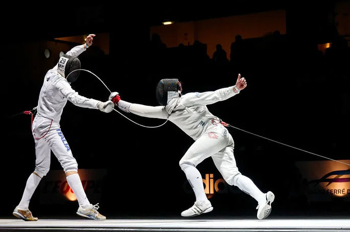

A esgrima é um desporto de combate onde dois atletas lutam com armas de lâmina. O objetivo é tocar no adversário sem ser tocado.
A esgrima faz parte dos Jogos Olímpicos desde 1896, desde os primeiros Jogos Olímpicos da era moderna.

Os esgrimistas usam este equipamento para se protegerem:
Para saber mais, visita o site da Federação Internacional de Esgrima.